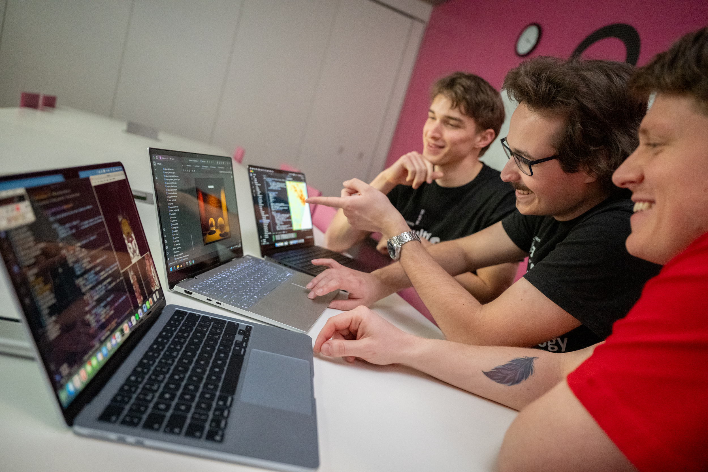
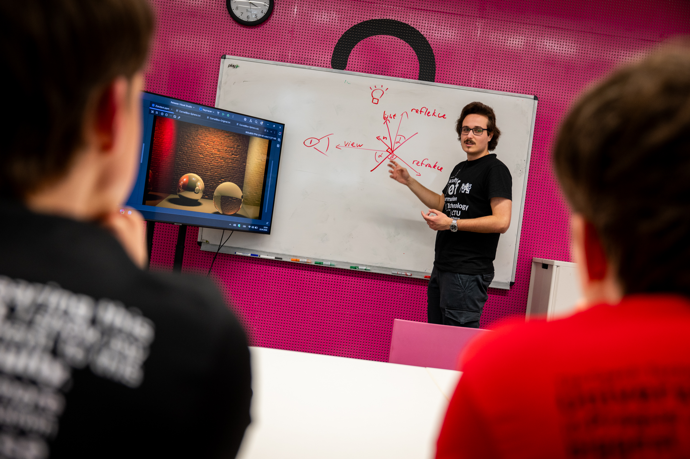
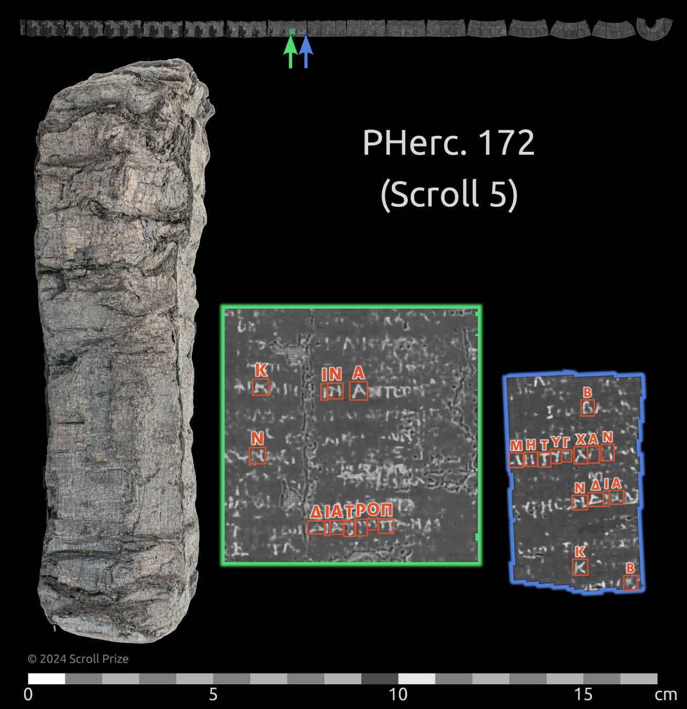

01 · REAL-TIME GRAFIKA
Unreal Engine, Blender a 3D skenování
Čtyřdenní blok UEE vedený Danielem Trippletem z Purdue University ukázal celý postup od přípravy 3D obsahu po interaktivní prostředí.
GRAFIT · studentská tvorba
Od prvního gamejamu po závěrečnou práci. Podívejte se, co vzniká ve výuce počítačové grafiky, game designu, herních enginů a interaktivních technologií na FIT ČVUT.



01— týmová tvorba 02— ray tracing & BRDF 03— game art
Víc než galerie her
Hry jsou viditelný výsledek, nikoli jediný cíl. Za projekty stojí grafické algoritmy, práce s obrazem, týmový design, výzkum rozhraní a schopnost myšlenku dotáhnout až k publiku.
Čtyřdenní blok UEE vedený Danielem Trippletem z Purdue University ukázal celý postup od přípravy 3D obsahu po interaktivní prostředí.

Experimentujeme s prostorovými, hmatovými a víceuživatelskými rozhraními.

Stejné metody zpracování obrazu a rozpoznávání nacházejí uplatnění i v kulturním dědictví.
Studentské projekty
Výběr z výuky, gamejamů, bakalářských a diplomových prací. Vedle digitálních her tu najdete deskovky, fyzické únikovky a experimentální formáty.
Chcete tvořit s námi?
Prohlédněte si studijní plán specializace Visual Computing and Game Design nebo se přijďte podívat na některou z akcí GRAFITU.